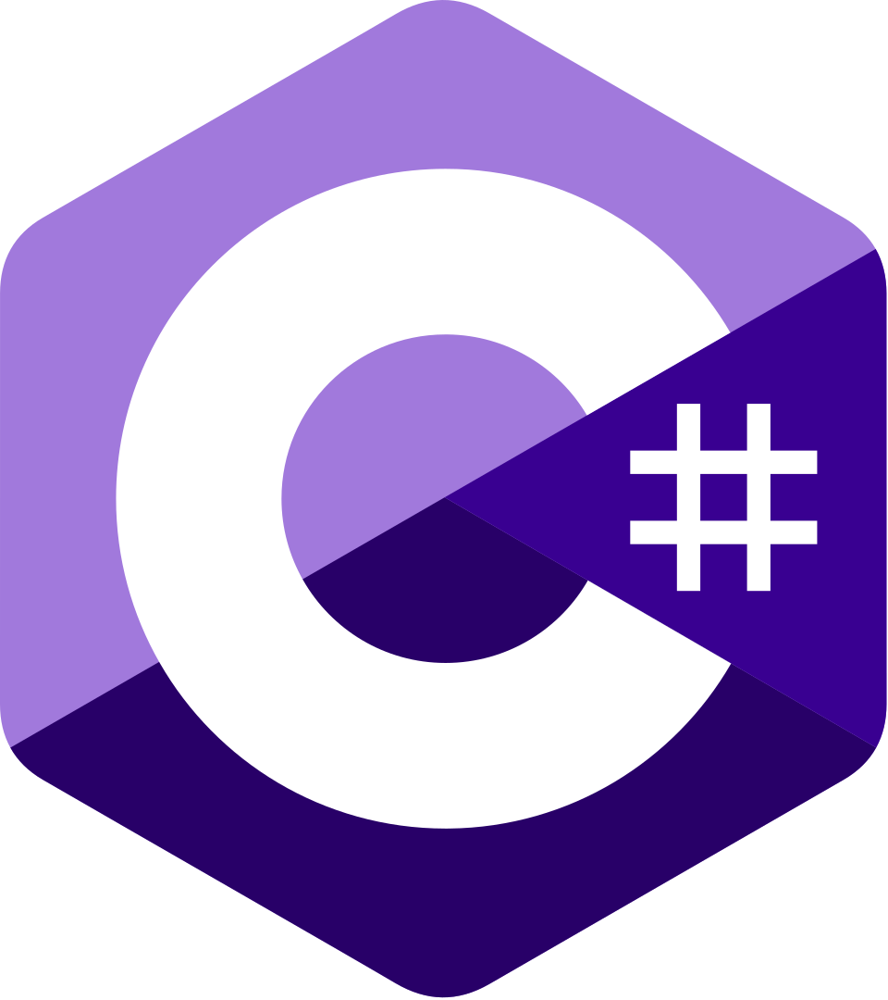

Cree un documento de HTML5 que contenga vínculos a sus cinco lenguajes de Programación favoritos. Su página debe contener el encabezado "Mis lenguajes de programación favoritos. Haga clic en cada uno de estos vículos para proba su página.

